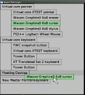

News
Faq
Documentation
Download
Links
Contact
News
17 February 2014
The eighth release, take it or leave it!
This release marks the start of hosting the source code on github, and coincides with the release of Laidout 0.094. There is now a shortcut definition infrastructure, plus a shortcut editing window. Also new is a tree window. Otherwise, just a lot of debugging and streamlining since the last release two years ago! In the works is a cairo based rendering backend.
3 December 2011
The seventh release, as they say!
This is the first release since the event subsystem has been completely rewritten. There is a new DateSelector widget, and the interface system has been smoothed out a bit. There is now the ability to handle multiple mice and keyboards for input. There is also a new utility called Laxinput to set up devices in varying configurations.
25 September 2011
Laxinput
|  |
Laxinput lets you simply set up the use of more than one mouse at the same time, which is needed to play with the newest
faux multi-touch capabilities of the
Laxkit. Being able to have different independent mice and keyboards is a feature of Xinput2,
part of recent X based systems. There has not emerged an easy configuration tool, other than xinput which only operates from the
command line. Laxinput attempts to fill this void, and lets you create and move around devices just by dragging their names around.
Laxinput is currently a part of the Laxkit source code. Grab the Laxkit source code, and go to the laxinput directory, compile, and viola! Laxinput currently implements only device hierarchy changes, so for more complicated input mapping, you will still probably need xinput, and perhaps xrandr. Planned are features to help map strange input devices like IR spots from wiimotes, or tuio input to something usable for applications! |
{kind=link}
24 September 2010
Laxkit Overhaul Merged
The overhaul branch since 0.0.6 is now merged into mainline Laxkit. It's approximately as workable as the previous mainline Laxkit, but still a long way to go to really be great!
20 June 2010
Laxkit Overhaul
Just in case anyone's trying to investigate bleeding edge Laxkit, work is progressing on a thorough reworking of the Laxkit to be adaptible to Xinput2 devices. This also involved a complete reworking of event passing, and will soon introduce an optional cairo based renderer. Hopefully soon this overhaul will be more or less stable, and merged with the mainline Laxkit.
27 February 2010
The sixth release, so to speak!
It's been over 2 years since the last release, and all I have to show for it are mostly cosmetic changes and bug fixes. I thought I might as well have a so-called release before embarking on an overhaul of Laxkit to abstract it more, making it easier to port, and also making it easier for laxkit elements to communicate with each other.
6 November 2007
The fifth release, such as it is!
It's been over a year since the last release, and all I have to show for it is as follows.
6 November 2006
The fourth release, if you can believe it! This release occurs just after the fifth release of Laidout, which is built on top of the Laxkit.
New this time around are smoother integration of images, with the capability to work with preview images rather than the actual image. Also, there is a large amount of general code cleanup.
13 May 2006
The third release, if I may be so bold! This release coincides with the third release of Laidout, which is built on top of the Laxkit.
The major feature of this release, besides general code shape up, is the introduction of ImagePatchData and ImagePatchInterface classes which provide a data class and user interface to stretch images using cubic bezier patches as a control mesh. These are like the ColorPatch*, but uses an image for the color source rather than a gradient.
See here for what a "cubic bezier patch" is.
8 April 2006
The second release, if that's the right phrase! This release coincides with the second release of Laidout, which is built on top of the Laxkit.
12 March 2006
The first release, such as it is! This release coincides with the first release of Laidout, which is built on top of the Laxkit.